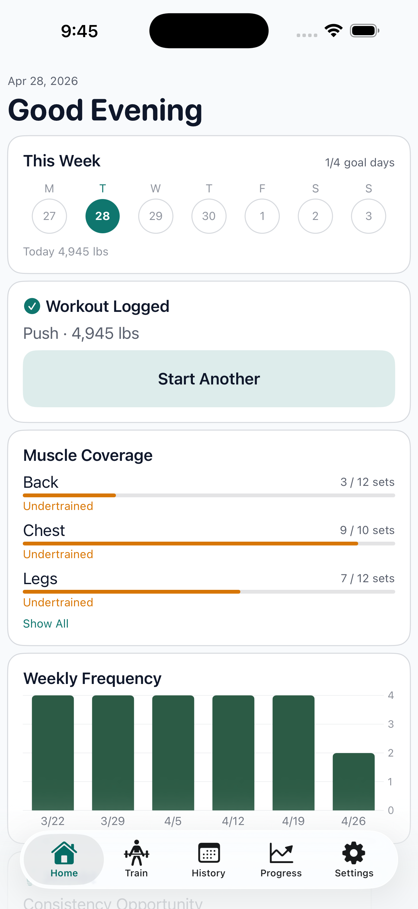
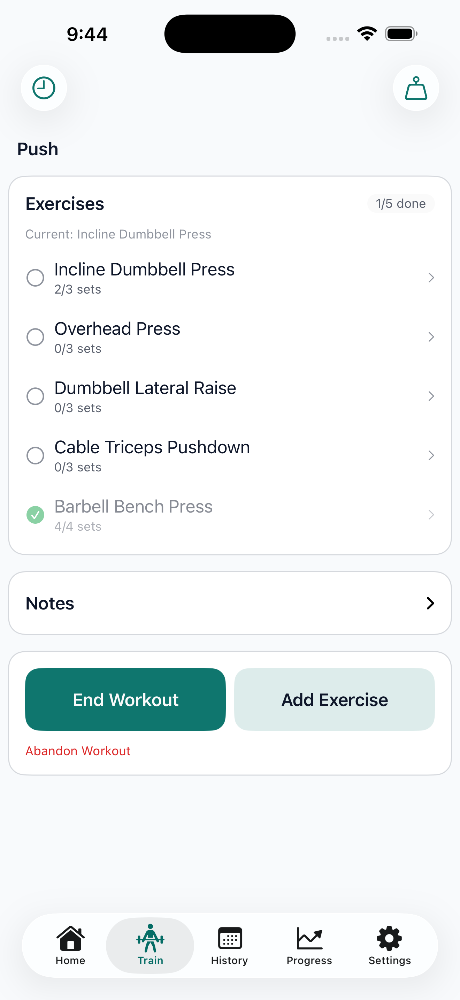
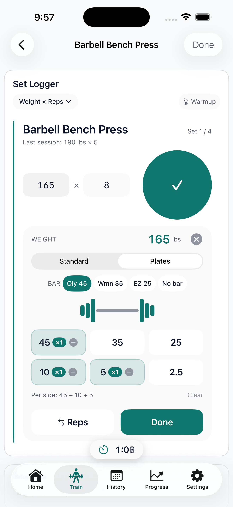
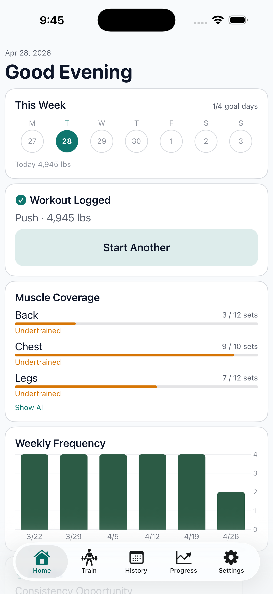
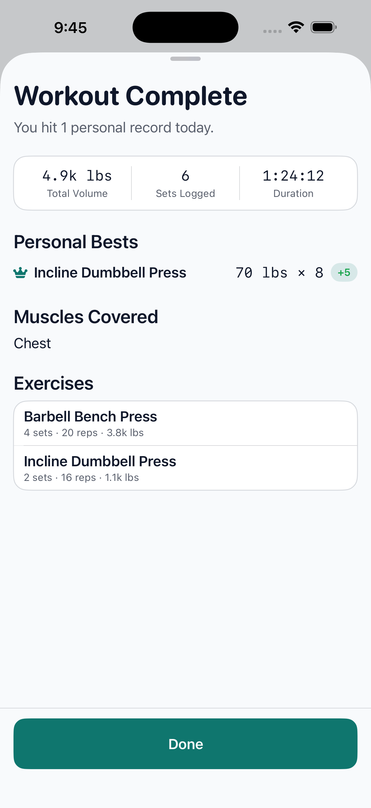
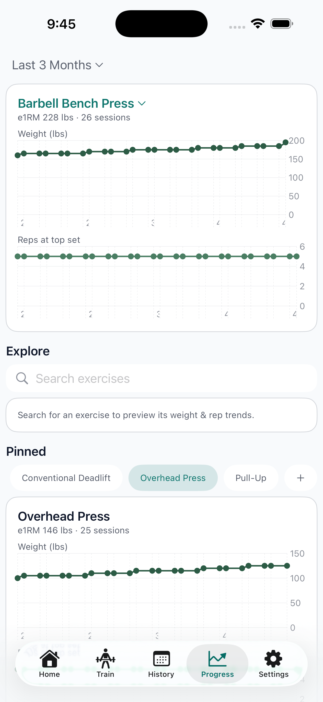
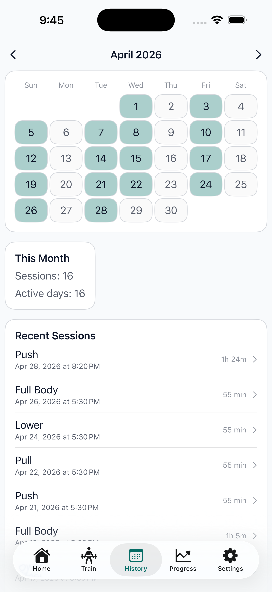
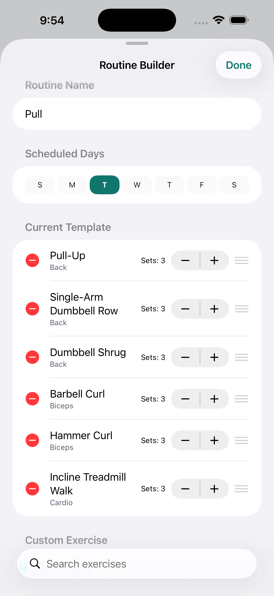
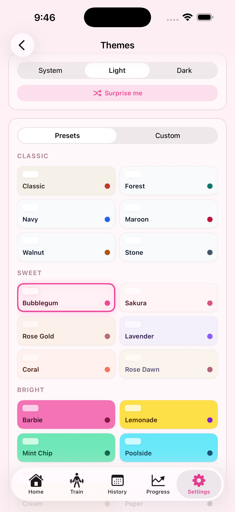

01 / Fast Logging
Three taps to a working set.
The quick-adjust row trades typing for tapping. Weight, reps, done — the keyboard never appears. Logging engineered to disappear so you can keep training.
An iOS app for lifters who train hard but have trouble sticking with tracking. Local-first, no accounts, no tracking — just your sets, your splits, and the progression they describe.
Questions? Email support.

01 / Fast Logging
The quick-adjust row trades typing for tapping. Weight, reps, done — the keyboard never appears. Logging engineered to disappear so you can keep training.
02 / Personal Records
Every set is checked against your history. New records surface automatically with a quiet badge — no chasing leaderboards, no shouting confetti.
03 / Muscle Coverage
A split-aware coverage engine maps each set to the muscle regions it actually trains — upper chest, posterior delts, long-head triceps. Imbalances stop hiding.
04 / Progression Trends
Per-exercise dual-axis charts plot weight against volume across weeks and months. Less guessing what to do next. More evidence that the work is working.
05 / Local-First
The app runs entirely on-device by default. Optional iCloud sync via Sign in with Apple — no servers we own, no analytics on your sets, no tracking ever.
06 / Health Integration
Optional writes to Apple Health. Live Activity on the lock screen and Dynamic Island during workouts. Quiet integration, never noisy.
“Logging a set is so fast it disappears.” — Design philosophy, internal







